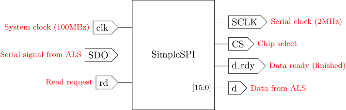
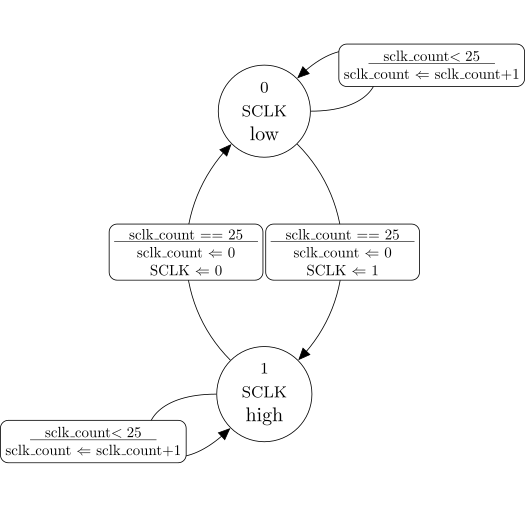
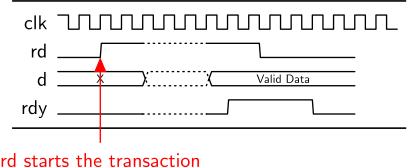
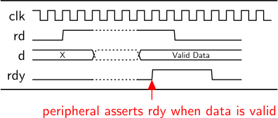
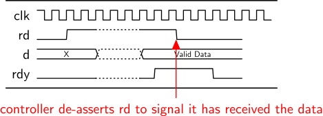

The Serial Peripheral Interface (SPI) protocol is a simple framework that facilitates asynchronous digital communication for a wide variety of chips, particularly for peripheral devices like sensors, real-time-clocks, simple displays, non-volatile memories, and analog-to-digital converters (ADCs).
There are numerous variations on the SPI protocol, but most interfaces support these signals:
CS_l – active low chip select signal.SCLK_l – a low-speed active-low serial clock that controls timing in the peripheral device.SDI – serial data in, wire for sending serial data to the peripheral.SDO – serial data out, wire for receiving serial data from the peripheral.The wires for SCLK, SDI, and SDO can be shared among many different peripherals, whereas each peripheral gets its own CS wire. At most one CS wire can be LOW at any time. When a device’s CS wire goes LOW, that device has is selected to use the bus. All the other devices’ CS wires stay HIGH, meaning they are prevented from using the bus.
Note on signal names: The terms “master” (M) and “slave” (S) were historically used for many types of devices, but are now falling out of favor since they are poor descriptors and have undesirable (and unnecessary) social connotations. Technical documentation frequently refers to the controlling device as the “master” and the peripheral as the “slave”. As a result, the terms MOSI (Master-Out Slave-In) and MISO (Master-In Slave-Out) are frequently used in place of SDI and SDO.
In this course, terms such as controller and peripheral are preferred in place of master/slave. Depending on the context, other term pairs could be “supervisor/worker”, “slient/server”, “consumer/producer”, etc.
The ALS module is a small circuit board containing an analog light sensor and an analog-to-digital converter (ADC) chip. The I/O pins allow SPI communication between the Basys3 and the ADC chip.
In this assignment, we will read sensor data from the ALS device. We will not need to write any data to the device. The procedure to READ data is summarized as follows:
Controller generates SCLK between 1 and 4 MHz.
Controller pulls CS LOW during the HIGH phase of SCLK, at least 10ns before the falling edge of SCLK.
For the next 15 cycles of SCLK, Controller records 1 bit of data from SDO on each rising edge of SCLK. The most significant bits are sent first.
In the 16th cycle of SCLK, Controller pulls CS HIGH again during the HIGH phase of SCLK.
Controller waits at least 5us before starting another request.
In the timing diagram, note that the first three and last four bits are all zero, with 8 data bits in the middle. Out of 16 SCLK cycles, 15 bits are sent, but only bits 12 down to 5 contain the data.

The Pmod ALS only supports READ operations, so we will implement a simplified READ-only SPI protocol. The I/O ports for this module are:

Internal Signals:

In this course, we will sometimes use a modified Mealy Machine notation for state diagrams. The symbol key is as follows:
Every edge indicates a clock cycle. In each clock cycle, the system must follow exactly one transition from its current state. Edges may loop back to the same state, or may transition to different states.
Each transition edge is overlaid with its condition and action. The condition is indicated above a horizontal line, and the action below the line. Assignments are made in concert with the transition, and are specified in the form:
[signal name] <= [value or expression];The ⇐ symbol indicates a non-blocking assignment. With non-blocking assignments, all signal changes are applied simultaneously at the start of the next clock cycle. Therefore any transition assignments take effect at the same time the transition completes and the FSM enters its target state.
The state machine that produces SCLK requires two states:


You will make a general-purpose peripheral interface module for reading data from SPI peripherals. The interface module mediates between the PMOD hardware and the application or controller. In this assignment, the application periodically samples the ALS output and displays it on the LEDs.
The application and interface coordinate with each other using a simple handshaking protocol like we used in previous assignments. The handshaking is used at higher levels of the system hierarchy. The handshaking protocol is detailed in the figures below.





Our READ interface uses the state machine design shown below.

The timing diagram below shows the system waiting in state 2. In the next clock cycle, rd rises to 1. Complete the timing diagram, showing all signal values from left to right. On most browsers you can right-click on the diagram to open the image, then print it out. Draw your solution on the printout, then scan or photograph your solution and save it in your working directory as an image named timing_solution (with an appropriate graphics or pdf file type).
Create a module named simpleSPI in the src/ subdirectory. It should implement the state transition diagram you analyzed in the previous exercise. You may use the code fragments in the sections below as a template.
The module should declare I/O ports for the system clk and rst_l signals, for the handshaking interface, and for the SPI interface. It should also declare signals including the alarm timer t, and counters for t and SCLK. And of course it should declare the state and bit_index vectors.
module simpleSPI
(
input clk,
input rst_l,
// SPI hardware ports:
input SDO,
output reg CS,
output reg SCLK,
// Application handshaking ports:
input rd,
output reg d_ready,
output reg [15:0] d
);
reg t; // timer signal
reg t_rst; // reset the time
reg [31:0] t_count; // timer count
reg [31:0] sclk_count; // sclk count
reg [2:0] state;
reg [3:0] bit_index;
//-----------------------------------------
// Initialization
//-----------------------------------------
initial begin
state = 0;
t = 0;
t_rst = 0;
bit_index = 0;
t_count = 0;
sclk_count = 0;
SCLK = 0;
CS = 1;
d = 0;
d_ready = 0;
end
//-----------------------------------------
endmodule // simpleSPIMake two processes to control the timing of SCLK and t, following these specifications:
SCLK should toggle every 25 cycles of clk.t should go to 0 when t_rst is high. When t_rst goes low, there should be a delay of 10 cycles of SCLK before t goes high.These processes should be placed within the simpleSPI module.
Partially completed process templates are given below.
//-----------------------------------------
// Clock Divider for SCLK
//-----------------------------------------
always @(posedge clk, negedge rst_l) begin
if (!rst_l) begin
SCLK <= 0;
sclk_count <= 0;
end
else begin
// COMPLETE THIS CONDITION: if (*something*) begin
// Toggle SCLK
// Reset sclk_count
end
else begin
// Increment sclk_count
end
end
end
//-----------------------------------------
//-----------------------------------------
// Alarm Timer Process
//-----------------------------------------
// Notice the sensitivity list includes
// SCLK, not clk
always @(posedge SCLK) begin
if (t_rst) begin
t <= 0;
t_count <= 0;
end
else begin
// COMPLETE THIS CONDITION: if (*something*) begin
t <= 1;
end
else begin
// Increment t_count
end
end
end
//-----------------------------------------Lastly, implement the state transition logic using the code below as a template.
//-----------------------------------------
// State Machine
//-----------------------------------------
always @(posedge SCLK, negedge rst_l) begin
if (!rst_l) begin
state <= 0;
end
else begin
case (state)
0: // RESET SPI BUS INTERFACE
begin
// YOU DO THIS
end
1: // INITIALIZE
begin
// YOU DO THIS
end
2: // WAIT FOR READ REQUEST
begin
// YOU DO THIS
end
3: // READ FROM SPI BUS
begin
// YOU DO THIS
end
4: // WAIT FOR ACK (i.e. 'rd' goes LOW)
begin
// YOU DO THIS
end
default: // CATCH OOPS
begin
state <= 0;
end
endcase // case (state)
end
end
//-----------------------------------------top ModuleMake a top module in the src/ subdirectory to implement these specifications:
clk, rst (active high), the SPI signals, and 16-bit led output.simpleSPI, with SPI signals passed through to the top-level I/Os (SCLK, CS, SDO)rd handshaking based on a timer process. The handshaking and timer process should be sensitive to SCLK.parameter named refresh_period indicates how long to wait between READ operations. The default value should be 40_000, so the sensor is read 10 times per second.rst button so that the simpleSPI module receives an active-low reset signal.Before running the simulation, open src/testbench.v and notice some new features. First, notice the parameter assignment for top:
top #(.refresh_period(2)) DUTFor simulation purposes, it is much more efficient to shorted the refresh_period to a small number like 2 instead of 40_000. This is one of the benefits of using parameters.
Next, notice an instance of a module named sim_spi_peripheral. This module is a test fixture that imitates the ALS sensor:
sim_spi_peripheral ALSmodel
(
.fid(fid),
.SCLK(SCLK),
.CS(CS),
.SDO(SDO)
);In the first READ operation, the fixture sends 0001111111100000 to verify the correct data positioning. In subsequent READ operations, it sends random data. In addition to the SPI signals, the module has an input port for fid so that it can write lines to test_result.txt.
Next, notice that a VCD file is produced in the initial block:
$dumpfile("spi.vcd");
// Dump signals in DUT with two levels of hierarchy:
$dumpvars(2,DUT);It may be necessary to debug your design using a VCD viewer, or by running make gui to run the simulation in graphical mode. To reduce the size of the VCD file, the $dumpon and $dumpoff system tasks are used so that the VCD skips clock cycles when nothing is happening (otherwise the file would fill up with clk toggling millions of times).
if (!CS || DUT.rd)
$dumpon;
else
$dumpoff;When you are satisfied that you understand testbench and sim_spi_peripheral, run make to perform the simulation. You should see output like this:
clk: 784 CS: 0 SCLK: 1 SDO: 0 led: 0000 (0000000000000000)
Sending 1180 (0001000110000000)
clk: 811 CS: 0 SCLK: 0 SDO: 0 led: 0000 (0000000000000000)
clk: 838 CS: 0 SCLK: 1 SDO: 0 led: 0000 (0000000000000000)
clk: 865 CS: 0 SCLK: 0 SDO: 0 led: 0000 (0000000000000000)
clk: 892 CS: 0 SCLK: 1 SDO: 0 led: 0000 (0000000000000000)
clk: 919 CS: 0 SCLK: 0 SDO: 0 led: 0000 (0000000000000000)
clk: 946 CS: 0 SCLK: 1 SDO: 0 led: 0000 (0000000000000000)
clk: 973 CS: 0 SCLK: 0 SDO: 1 led: 0000 (0000000000000000)
clk: 1000 CS: 0 SCLK: 1 SDO: 1 led: 1000 (0001000000000000)
clk: 1027 CS: 0 SCLK: 0 SDO: 0 led: 1000 (0001000000000000)
clk: 1054 CS: 0 SCLK: 1 SDO: 0 led: 1000 (0001000000000000)
clk: 1081 CS: 0 SCLK: 0 SDO: 0 led: 1000 (0001000000000000)
clk: 1108 CS: 0 SCLK: 1 SDO: 0 led: 1000 (0001000000000000)
clk: 1135 CS: 0 SCLK: 0 SDO: 0 led: 1000 (0001000000000000)
clk: 1162 CS: 0 SCLK: 1 SDO: 0 led: 1000 (0001000000000000)
clk: 1189 CS: 0 SCLK: 0 SDO: 1 led: 1000 (0001000000000000)
clk: 1216 CS: 0 SCLK: 1 SDO: 1 led: 1100 (0001000100000000)
clk: 1243 CS: 0 SCLK: 0 SDO: 1 led: 1100 (0001000100000000)
clk: 1270 CS: 0 SCLK: 1 SDO: 1 led: 1180 (0001000110000000)
clk: 1297 CS: 0 SCLK: 0 SDO: 0 led: 1180 (0001000110000000)
clk: 1324 CS: 0 SCLK: 1 SDO: 0 led: 1180 (0001000110000000)
You can see the top-level signal transitions at every rising and falling edge of SCLK. The sim_spi_peripheral module reports the data value being sent, and you should see the same value appear on led.
In GUI mode, the signals for a single READ operation look like this:

Carefully examine the waveforms and verify that they match your expectations from the timing analysis.
Open the file spi.xdc and notice that the SPI signals are mapped to header JB:
##Pmod Header JB
##Sch name = JB1 (connect to CS)
set_property PACKAGE_PIN A14 [get_ports {CS}]
set_property IOSTANDARD LVCMOS33 [get_ports {CS}]
##Sch name = JB2 (no connection)
#set_property PACKAGE_PIN A16 [get_ports {JB[1]}]
#set_property IOSTANDARD LVCMOS33 [get_ports {JB[1]}]
##Sch name = JB3 (connect to SDO)
set_property PACKAGE_PIN B15 [get_ports {SDO}]
set_property IOSTANDARD LVCMOS33 [get_ports {SDO}]
##Sch name = JB4 (connect to SCLK)
set_property PACKAGE_PIN B16 [get_ports {SCLK}]
set_property IOSTANDARD LVCMOS33 [get_ports {SCLK}]Locate the JB header on the Basys3 board and note the label of pin 1. Then examine the labels on the PmodALS peripheral. Starting from the top, they should read CS, NC, SDO, and SCLK. The label NC means “no connection.” Those pins match up to the top row of the double-row header on the Basys3 board. Plug the ALS peripheral into the header.
Run make implement to build the design.
The LEDs should light up indicating the light level detected by the ALS chip. The 8-bits of ALS output will appear in the middle of the 16-bit LED output, padded by zeros on each side.
On the Basys3 board, test these cases:
Photograph the test cases and save the photos in the working directory as case1, case2, etc. Turn in your work using git:
git add case* src/*.v *.v *.rpt *.txt *.tcl *.bit *.xdc
git commit . -m "Complete"
git push origin masterIndicate on Canvas that your assignment is done.